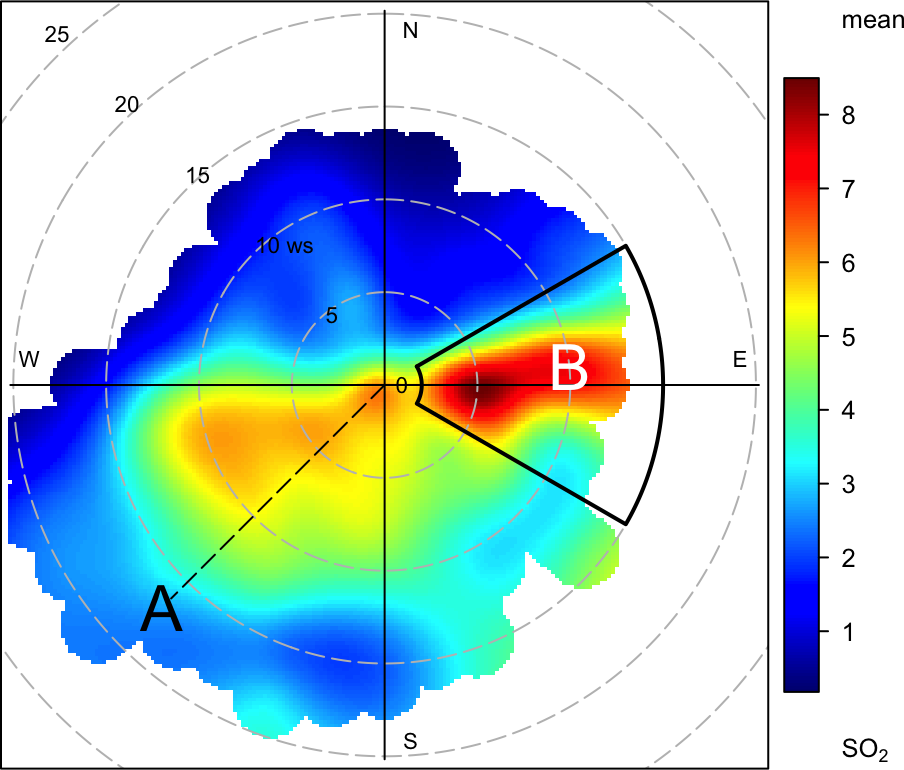

A Annotating openair plots
A frequently asked question about openair and requested feature is how to annotate plots. While all openair functions could have options to allow annotations to be made, this would make the functions cumbersome and reduce flexibility. Nevertheless, it is useful to be able to annotate plots in lots of different ways. Fortunately there are existing functions in packages such as lattice and [latticeExtra{.pkg} that allow for plots to be updated. An example of the sorts of annotation that are possible is shown in Figure ??, which is an enhanced version of Figure 10.1. These annotations have been subsequently added to Figure @ref(fig:timePlot} and built up in layers. This section considers how to annotate openair plots more generally and uses Figure ?? as an example of the types of annotation possible. Also considered specifically is the annotation of plots that are in polar coordinates, as these can sometimes benefit from different types of annotation.
There are several types of objects that can be useful to add to plots including text, shapes, lines and other shading. Given that many openair plots can consist of multiple panels, it is also useful to think about how to annotate specific panels. The examples given in this section will apply to all openair plot, the only difference being the coordinate system used in each case.
The basis of openair annotations is through the use of the
latticeExtra} package, which should already be installed as part of [openair]{.pkg}. In that package there is a function calledlayer}
that effectively allows annotations to be built up ‘layer by layer’.

A.1 Adding text
To add text (or other annotations) it is necessary to know the
coordinates on a plot for where the text will go, which will depend on
the data plotted. In this extended example using the timePlot
function, the y-axis will be in ordinary numerical units, whereas the
x-axis will be in a date-time format (POSIXct).
There are various ways that annotations can be added, but the method
used here is to add to the previous plot using a function called
trellis.last.object() to which we want to add a later. This may
seem complicated, but once a few examples are considered, the method
becomes very powerful, flexible and straightforward. In a multi-panel
plot such as Figure ?? it is also useful to
specify which rows/columns should be added to. If they are not
specified then the annotation will appear in all panels.
First, a plot should be produced to which we wish to add some text.
## make sure latticeExtra is loaded
library(latticeExtra)
timePlot(selectByDate(mydata, year = 2003, month = "aug"),
pollutant = c("nox", "o3", "pm25", "pm10", "ws"))So, considering @ref(fig:timePlotAnnotate, this is how the textsome missing data’ was added to the top panel.
trellis.last.object() +
layer(ltext(x = ymd("2003-08-04"), y = 200,
labels = "some missing data"), rows = 1)So what does this do? First, the trellis.last.object()} is simply the last plot that was plotted. Next thelayerfunction is used to add some text. The text itself is added using theltext[lattice]{.pkg} function. It is worth having a look at the help forltextas that gives an overview of all the common annotations and other options. We have chosen to plot the text at position x = '2003-08-04' and y = 200 and the label itself. A useful option toltextispos`. Values can be 1, 2, 3 and 4, and indicate
positions below (the default), to the left of, above and to the right
of the specified coordinates
A.2 Adding text and a shaded area
This time we will highlight an interval in row 2 (O3) and write
some text on top. Note that this time we use the lpolygon} function and choose to put it under everything else on the plot. For the text, we have chosen a colour (yellow) font type 2 (bold) and made it a bit bigger (cex = 1.5). Note also they` values extend
beyond the actual limits shown on the plot — just to make sure they
cover the whole region.
The polygon could of course be horizontal and more than one producing a series of ‘bands’ e.g. air quality indexes. A more sophisticated approach is shown later for PM2.5
## add shaded polygon
trellis.last.object() +
layer(lpolygon(x = c(ymd("2003-08-07"),
ymd("2003-08-07"), ymd("2003-08-12"),
ymd("2003-08-12")), y = c(-20, 600, 600, -20),
col = "grey", border = NA), under = TRUE, rows = 2)
## add text
trellis.last.object() +
layer(ltext(x = ymd_hm("2003-08-09 12:00"), y = 50,
labels = "!!episode!!", col = "yellow",
font = 2, cex = 1.5), rows = 2)The small shaded, semi-transparent area shown in the bottom panel was added as follows:
## add shaded polygon
plt <- plt +
layer(lpolygon(x = c(ymd("2003-08-21"), ymd("2003-08-21"),
ymd("2003-08-23"), ymd("2003-08-23")),
y = c(4, 8, 8, 4), col = "blue", border = NA,
alpha = 0.2), rows = 5)A.3 Adding an arrow
The arrow shown on the first panel of Figure ??
was added as follows. Note the code = 3} placed arrows at both ends. Note thatangle} is the angle from the shaft of the arrow to
the edge of the arrow head.
trellis.last.object() +
layer(larrows(ymd("2003-08-01"), 100,
ymd_hm("2003-08-08 14:00"),
100, code = 3, angle = 30), rows = 1)A.4 Adding a reference line and text
This code adds a vertical dashed reference line shown in the 4th panel
(PM10) along with some text aligned at 90 degrees using the
srt option of ltext.
trellis.last.object() +
layer(panel.abline(v = ymd("2003-08-25"), lty = 5),
rows = 4)
trellis.last.object() +
layer(ltext(x = ymd_hm("2003-08-25 08:00"), y = 60,
labels = "reference line", srt = 90), rows = 4)A.5 Highlight a specific point
Up until now annotations have been added using arbitrary coordinates in each panel. What if we wanted to highlight a particular point, or more generally work with the actual data that are plotted. Knowing how to refer to existing data greatly extends the power of these functions.
It is possible to refer to a specific point in a panel simply by
indexing the point of interest i.e. x, y. For example, to
mark the 200th PM10 concentration (without knowing the actual date
or value):
## add a specfic point
trellis.last.object() +
layer(lpoints(x[200], y[200], pch = 16, cex = 1.5),
rows = 4)What if we wanted to highlight the maximum O3 concentration? It is
possible to work out the index first and then use that to refer to
that point. Note the } to allow for the code to span multiple
commands.
## add a point to the max O3 concentration
trellis.last.object() +
layer({maxy <- which.max(y);
lpoints(x[maxy], y[maxy], col = "black", pch = 16)},
rows = 2)
## label max ozone
trellis.last.object() +
layer({maxy <- which.max(y);
ltext(x[maxy], y[maxy], paste(y[maxy], "ppb"),
pos = 4)}, rows = 2)A.6 Add a filled polygon
It can be seen in the top panel of Figure ?? that
some data are highlighted by filling the area below the line. This
approach can be useful more generally in plotting. While it is
possible to draw polygons easily and refer to the data itself, there
needs to be a way for dealing with gaps in data, otherwise these gaps
could be filled in perhaps unpredictable ways. A function has been
written to draw a polygon taking into account gaps (poly.na).
poly.na <- function(x1, y1, x2, y2, col = "black", alpha = 0.2) {
for(i in seq(2, length(x1)))
if (!any(is.na(y2[c(i - 1, i)])))
lpolygon(c(x1[i - 1], x1[i], x2[i], x2[i - 1]),
c(y1[i - 1], y1[i], y2[i], y2[i - 1]),
col = col, border = NA, alpha = alpha)
}This time we work out the ids of the data spanning an area of
interest. Then the poly.na function is used. Note that the alpha
transparency is by default 0.2 but another value can easily be
supplied, as shown in the air quality `bands’ example.
trellis.last.object() +
layer({id <- which(x >= ymd("2003-08-11") &
x <= ymd("2003-08-25"));
poly.na(x[id], y[id], x[id], rep(0, length(id)),
col = "darkorange")}, rows = 1)A.7 Add air quality bands as polygons
It is a simple extension to go from using a polygon below the data to polygons at certain intervals e.g. air quality indexes. These are shown for PM2.5 and the bands considered are 0–20, 20–30, 30–40 and >40.
trellis.last.object() +
layer(poly.na(x, y, x, rep(0, length(x)),
col = "green", alpha = 1), rows = 3)
trellis.last.object() +
layer(poly.na(x, ifelse(y <20, NA, y), x,
rep(20, length(x)), col = "yellow", alpha = 1),
rows = 3)
trellis.last.object() +
layer(poly.na(x, ifelse(y <30, NA, y),
x, rep(30, length(x)),
col = "orange", alpha = 1), rows = 3)
trellis.last.object() +
layer(poly.na(x, ifelse(y <40, NA, y),
x, rep(40, length(x)),
col = "red", alpha = 1), rows = 3)A.8 Polar plot examples
Many of the examples considered above are relevant to all other functions e.g. how to add text, choosing rows and columns to plot in. Polar coordinate plots are different because of the coordinate system used and this section considers a few examples.
One useful approach is to be able to draw an arc, perhaps highlighting
an area of interest. A simple, but flexible function has been written
to do this. It takes arguments theta1 and theta2 that define
the angular area of interest and lower and upper to set the
lower and upper wind speed, respectively. It also has additional
arguments theta3 and theta4 which optionally set the angles
for the ‘upper’ wind speed.
arc <- function(theta1 = 30, theta2 = 60, theta3 = theta1, theta4 = theta2,
lower = 1, upper = 10){
## function to work out coordinates for an arc sector
if (theta2 < theta1) {
ang1 <- seq(theta1, 360, length = abs(theta2 - theta1))
ang2 <- seq(0, theta2, length = abs(theta2 - theta1))
angles.low <- c(ang1, ang2)
## for upper angles
ang1 <- seq(theta1, 360, length = abs(theta4 - theta3))
ang2 <- seq(0, theta2, length = abs(theta4 - theta3))
angles.high <- c(ang1, ang2)
} else {
angles.low <- seq(theta1, theta2, length = abs(theta2 - theta1))
angles.high <- seq(theta3, theta4, length = abs(theta4 - theta3))
}
x1 <- lower * sin(pi * angles.low / 180)
y1 <- lower * cos(pi * angles.low / 180)
x2 <- rev(upper * sin(pi * angles.high / 180))
y2 <- rev(upper * cos(pi * angles.high / 180))
data.frame(x = c(x1, x2), y = c(y1, y2))
}
Following on from the previous examples, some annotations have been added to the basic polar plor for SO2 as shown in Figure ??. Note that in these plots (0, 0) is the middle of the plot and the radial distance will be determined by the wind speed — or whatever the radial variable is. This way of plotting arcs can also be applied to other functions that show directional data.
polarPlot(mydata, pollutant = "so2", col = "jet")
trellis.last.object() + layer(ltext(-12, -12, "A", cex = 2))
trellis.last.object() + layer(ltext(10, 2, "B", cex = 2, col = "white"))
trellis.last.object() + layer(lsegments(0, 0, -11.5, -11.5, lty = 5))
## add and arc to highlight area of interest
trellis.last.object() +
layer(lpolygon(x = arc(theta1 = 60, theta2 = 120, lower = 2,
upper = 15)$x, y = arc(theta1 = 60,
theta2 = 120, lower = 2,
upper = 15)$y, lty = 1, lwd = 2))A.9 Using grid graphics — identify locations interactively
The examples above provide a precise way of annotating plots for
single or multi-panels openair displays. However, these methods won’t
work for plots that consist of completely separate plots such as the
four plots in timeVariation. There are however other methods that
can be used to annotate such plots using the package grid}, which forms the basis of [lattice]{.pkg} graphics. There is enormous capability for annotating plots using thegrid` package and only a few simple
examples are given here.
Given a plot such as Figure 11.1, how could texts be added
at any location — say in the middle monthly plot? One very useful
function for this type of annotation that allows the user to
interactively choose a location is the grid.locator()} function in thegrid` package. That function can be called with different
coordinate systems — but the one we want defines the bottom-left
corner as (0, 0) and the top right as (1, 1).
First, make a timeVariation plot like Figure 11.1.
timeVariation(mydata)Now let’s choose a location on the plot interactively using the mouse and selecting somewhere in the middle of the monthly plot.
library(grid)
## bring up the interactive location chooser
grid.locator(unit = "npc")What should happen is that in the R console the coordinates are given
for that point. In my case these were x = 0.503 and y = 0.338. These
coordinates can now be used as the basis of adding some text or other
annotation. In the example below, the grid.text} function is used to add some text for these coordinates making the font bigger (cex
= 2), bold (font = 2) and blue (col = “blue”`).
grid.text(x = 0.503, y = 0.338, label = "here!",
gp = gpar(cex = 2, font = 2, col = "blue"))Even with this basic approach, some sophisticated annotation is possible with any openair plot. There are many other functions that can be used from the grid package that would allow for polygons, segments and other features to be drawn is a similar way to the examples earlier in this section. Continuing with the same example, here is how to add an arrow pointing to the maximum concentration shown on the top plot for Saturday (again using the `grid.locator} function).
grid.lines(x = c(0.736, 0.760), y = c(0.560, 0.778),
arrow = arrow())
grid.text(x = 0.736, y = 0.560, label = "maximum", just = "left")Applequist, Scott. 2012. “Wind Rose Bias Correction.” Journal of Applied Meteorology and Climatology 51 (7): 1305–9.
Ara Begum, Bilkis, Eugene Kim, Cheol-Heon Jeong, Doh-Won Lee, and Philip K. Hopke. 2005. “Evaluation of the potential source contribution function using the 2002 Quebec forest fire episode.” Atmospheric Environment 39 (20): 3719–24. https://doi.org/10.1016/j.atmosenv.2005.03.008.
Ashbaugh, Lowell L., William C. Malm, and Willy Z. Sadeh. 1985. “A residence time probability analysis of sulfur concentrations at grand Canyon National Park.” Atmospheric Environment (1967) 19 (8): 1263–70. https://doi.org/10.1016/0004-6981(85)90256-2.
Carslaw, David. 2020. Worldmet: Import Surface Meteorological Data from Noaa Integrated Surface Database (Isd). http://github.com/davidcarslaw/worldmet.
Carslaw, D. C., and S. D. Beevers. 2013. “Characterising and Understanding Emission Sources Using Bivariate Polar Plots and K-Means Clustering.” Environmental Modelling & Software 40 (0): 325–29. https://doi.org/10.1016/j.envsoft.2012.09.005.
Carslaw, D. C., S. D. Beevers, K. Ropkins, and M. C. Bell. 2006. “Detecting and Quantifying Aircraft and Other on-Airport Contributions to Ambient Nitrogen Oxides in the Vicinity of a Large International Airport.” Atmospheric Environment 40 (28): 5424–34.
Carslaw, D. C., S. D. Beevers, and J. E. Tate. 2007. “Modelling and Assessing Trends in Traffic-Related Emissions Using a Generalised Additive Modelling Approach.” Atmospheric Environment 41 (26): 5289–99.
Carslaw, D. C., and K. Ropkins. 2012. “openair — An R package for air quality data analysis.” Environmental Modelling & Software 27–28 (0): 52–61. https://doi.org/10.1016/j.envsoft.2011.09.008.
COMEAP. 2011. “Review of the Uk Air Quality Index: A Report by the Committee on the Medical Effects of Air Pollutants.” http://comeap.org.uk/documents/reports/130-review-of-the-uk-air-quality-index.html.
Droppo, James G, and Bruce A Napier. 2008. “Wind Direction Bias in Generating Wind Roses and Conducting Sector-Based Air Dispersion Modeling.” Journal of the Air & Waste Management Association 58 (7): 913–18.
Fleming, Z. L., P. S. Monks, and A. J. Manning. 2012. “Review: Untangling the influence of air-mass history in interpreting observed atmospheric composition.” Atmospheric Research 104-105: 1–39. https://doi.org/10.1016/j.atmosres.2011.09.009.
Friendly, M. 2002. “Corrgrams: Exploratory Displays for Correlation Matrices.” The American Statistician 56 (4): 316–25.
Grange, Stuart K, Alastair C Lewis, and David C Carslaw. 2016. “Source Apportionment Advances Using Polar Plots of Bivariate Correlation and Regression Statistics.” Atmospheric Environment 145: 128–34.
Hastie, T. J., and R. J. Tibshirani. 1990. Generalized Additive Models. London: Chapman; Hall.
Henry, Ronald, Gary A. Norris, Ram Vedantham, and Jay R. Turner. 2009. “Source Region Identification Using Kernel Smoothing.” Article. Environmental Science & Technology 43 (11): 4090–7. https://doi.org/{10.1021/es8011723}.
Hirsch, R. M., J. R. Slack, and R. A. Smith. 1982. “Techniques of Trend Analysis for Monthly Water-Quality Data.” Water Resources Research 18 (1): 107–21.
Hsu, Ying-Kuang, Thomas M. Holsen, and Philip K. Hopke. 2003. “Comparison of hybrid receptor models to locate PCB sources in Chicago.” Atmospheric Environment 37 (4): 545–62. https://doi.org/10.1016/S1352-2310(02)00886-5.
Kunsch, H. R. 1989. “The Jackknife and the Bootstrap for General Stationary Observations.” Annals of Statistics 17 (3): 1217–41.
Legates, D. R., and G. J. McCabe. 2012. “A Refined Index of Model Performance: A Rejoinder.” International Journal of Climatology.
Legates, D. R., and G. J. McCabe Jr. 1999. “Evaluating the Use of ‘Goodness-of-Fit’ Measures in Hydrologic and Hydroclimatic Model Validation.” Water Resources Research 35 (1): 233–41.
Lupu, Alexandru, and Willy Maenhaut. 2002. “Application and comparison of two statistical trajectory techniques for identification of source regions of atmospheric aerosol species.” Atmospheric Environment 36: 5607–18.
Pekney, Natalie J., Cliff I. Davidson, Liming Zhou, and Philip K. Hopke. 2006. “Application of PSCF and CPF to PMF-Modeled Sources of PM 2.5 in Pittsburgh.” Aerosol Science and Technology 40 (10): 952–61. https://doi.org/10.1080/02786820500543324.
Sarkar, Deepayan. 2007. Lattice Multivariate Data Visualization with R. New York: Springer.
Seibert, P, H Kromp-Kolb, U Baltensperger, and DT Jost. 1994. “Trajectory Analysis of High-Alpine Air Pollution Data.” NATO Challenges of Modern Society 18: 595–95.
Sen, P. K. 1968. “Estimates of Regression Coefficient Based on Kendall’s Tau.” Journal of the American Statistical Association 63(324): 1379–89.
Taylor, K. E. 2001. “Summarizing Multiple Aspects of Model Performance in a Single Diagram.” Journal of Geophysical Research 106 (D7): 7183–92.
Theil, H. 1950. “A Rank Invariant Method of Linear and Polynomial Regression Analysis, I, Ii, Iii.” Proceedings of the Koninklijke Nederlandse Akademie Wetenschappen, Series A – Mathematical Sciences 53: 386–92, 521–25, 1397–1412.
Uria-Tellaetxe, I, and D. C. Carslaw. 2014. “Conditional Bivariate Probability Function for Source Identification.” Environmental Modelling & Software 59: 1–9. https://doi.org/10.1016/j.envsoft.2014.05.002.
Westmoreland, E. J., N Carslaw, D. C. Carslaw, A. Gillah, and E. Bates. 2007. “Analysis of Air Quality Within a Street Canyon Using Statistical and Dispersion Modelling Techniques.” Atmospheric Environment 41 (39): 9195–9205.
Wilcox, Rand R. 2010. Fundamentals of Modern Statistical Methods: Substantially Improving Power and Accuracy. 2nd ed. Springer New York. http://www.springerlink.com/content/978-1-4419-5524-1.
Wilks, Daniel S. 2005. Statistical Methods in the Atmospheric Sciences, Volume 91, Second Edition (International Geophysics). 2nd ed. Hardcover; Academic Press.
Willmott, Cort J, Scott M Robeson, and Kenji Matsuura. 2011. “A Refined Index of Model Performance.” International Journal of Climatology.
Wood, S. N. 2006. Generalized Additive Models: An Introduction with R. Chapman; Hall/CRC.
Yu, K. N., Y. P. Cheung, T. Cheung, and R. C. Henry. 2004. “Identifying the Impact of Large Urban Airports on Local Air Quality by Nonparametric Regression.” Atmospheric Environment 38 (27): 4501–7.